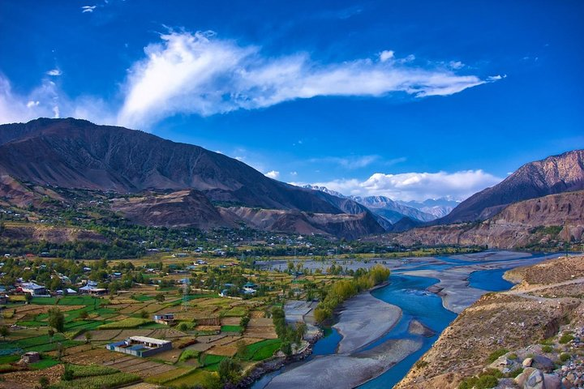

<div class="portfolio-single-load clearfix">
    <div class="custom-full-width-box">
        <div class="custom-container">
            <div class="custom-row align-items-center">
                <div class="custom-image-column">
                    
                </div>
                <div class="custom-text-column">
                    <h2 class="custom-heading">Kalash Valley</h2>
                    <p class="custom-paragraph">
                        
                        Just 12.3 kilometers from Chitral city lies the enchanting Kalash Valley, known for its pristine natural beauty and unique culture. Home to approximately 4000 individuals from the Kalash tribe, who are believed to be descendants of Alexander the Great, this valley offers a serene escape from the hustle and bustle of city life. The Kalash people speak the Kalasha language and follow an ancient polytheistic faith.
                        <br><br>
                        One of the highlights of the Kalash Valley is its vibrant festivals, such as the Joshi Spring celebrations in May, which last for 4 to 5 days and feature traditional dances and rituals. Another significant event is Cho was, the New Year celebration held in December, where locals don distinctive attire and engage in festive activities.
                        

                    </p>
                </div>
            </div>
        </div>
    </div><!-- .custom-full-width-box end -->

</div><!-- end single-project -->
